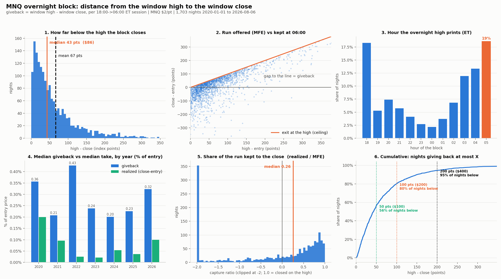
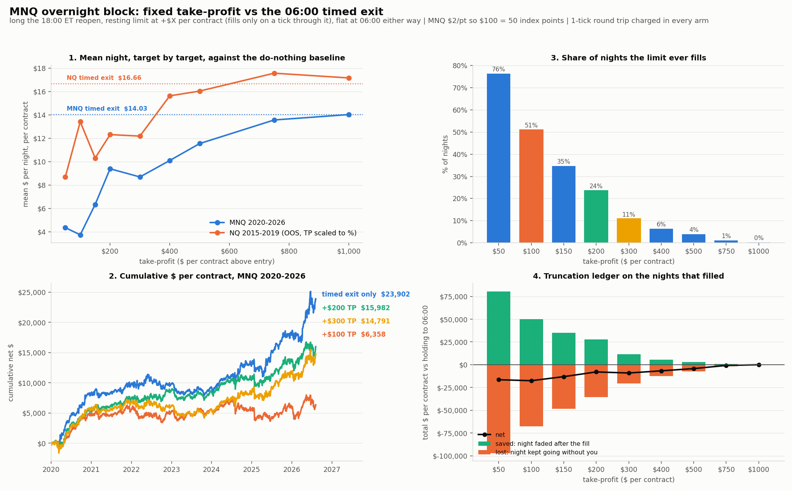
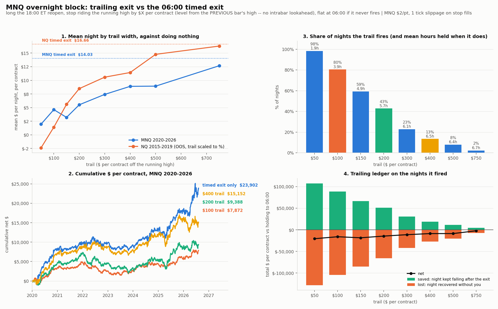
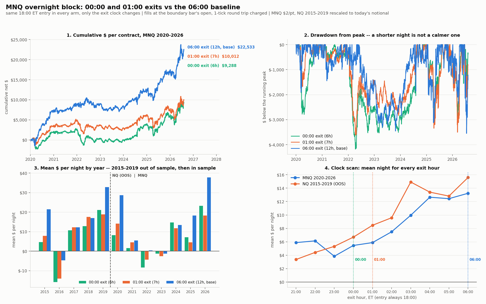
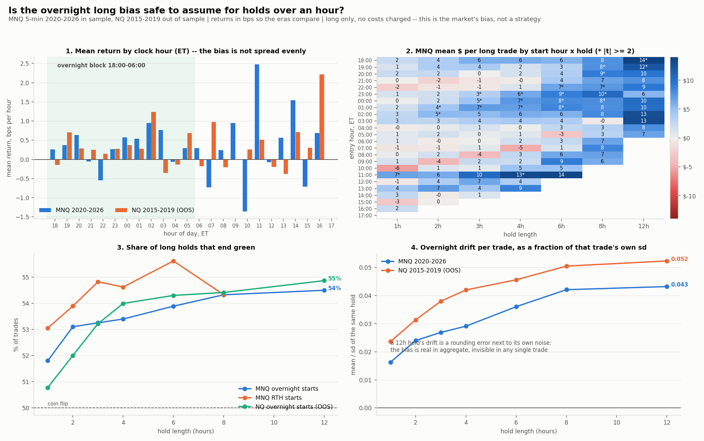

Everything tested against the validated 18:00→06:00 ET long. Four exit-side ideas were put up against the clock and all four lost; one generalisation question about overnight drift was answered yes-but. This page is the record, with the charts and the numbers each conclusion rests on.
Long the 18:00 ET Globex reopen, flat at 06:00 ET, every night, never short, never conditioned. Validated 2015–2026 before this session's work began.
The prior work established the direction is settled — every short rule loses, the drift is positive in nearly every conditioning bucket — and that the clock itself is permutation-tested, so the window is not an optimisation artifact. Everything below attacks the exit, which was the last untested degree of freedom.
Before testing any exit rule, measure what a better exit could theoretically capture: the distance from the night's own high to where the block actually closes.
| Metric (index points) | Mean | Median | p90 | p99 | Max |
|---|---|---|---|---|---|
| Giveback (high − close) | 66.6 | 42.8 | 150 | 348 | 885 |
| MFE (high − entry) | 73.8 | 50.8 | — | — | 755 |
| Realised (close − entry) | 7.3 | 11.2 | — | — | 710 |
Why this is a ceiling, not an opportunity: the high is found by looking backwards. Live, you never know it was the high until it is gone. Sections 3–5 test whether any forward-looking rule reaches it.

Distribution of the giveback, run-offered vs run-kept, hour the high prints,
by-year medians, capture ratio, and the cumulative curve.
Source: mnq_overnight_giveback_report.py
A resting limit at +$100 / +$200 / +$300 per contract, 06:00 timed exit as backstop. Limits fill only when price trades a tick through the level (queue risk); gap-ups fill better at the open.
| Take profit | $/night | $/yr | Sharpe | PF | Hit % | MaxDD | Worst | Fills | Pair-t |
|---|---|---|---|---|---|---|---|---|---|
| +$100 (50 pts) | 3.73 | 941 | 0.39 | 1.07 | 64.8 | −3,688 | −1,770 | 51% | −2.82 |
| +$200 (100 pts) | 9.38 | 2,365 | 0.82 | 1.15 | 57.8 | −2,357 | −1,770 | 24% | −1.63 |
| +$300 (150 pts) | 8.69 | 2,189 | 0.70 | 1.13 | 55.8 | −3,080 | −1,770 | 11% | −2.65 |
| None — 06:00 exit | 14.03 | 3,537 | 1.01 | 1.21 | 55.2 | −3,559 | −1,770 | — | 0.00 |

Target-by-target means in both eras, equity curves, fill frequency, and the
saved-vs-lost ledger. Source: mnq_takeprofit_backtest.py
A stop riding the running high by $X, level always taken from the high known at the previous bar close (no intrabar lookahead), gap-throughs filled at the open, one extra tick of slippage on every stop fill.
| Trail | $/night | $/yr | Sharpe | Hit % | MaxDD | Worst | Fires | Held | Pair-t |
|---|---|---|---|---|---|---|---|---|---|
| $100 (50 pts) | 4.62 | 1,165 | 0.74 | 40.3 | −3,518 | −101 | 80% | 3.9h | −2.02 |
| $200 (100 pts) | 5.51 | 1,389 | 0.59 | 48.3 | −5,401 | −201 | 43% | 5.7h | −2.21 |
| $400 (200 pts) | 8.90 | 2,242 | 0.73 | 53.4 | −4,488 | −401 | 13% | 6.5h | −1.86 |
| None — 06:00 exit | 14.03 | 3,537 | 1.01 | 55.2 | −3,559 | −1,770 | — | 12h | 0.00 |

Trail width vs mean night in both eras, equity curves, fire frequency with mean
hold length, and the saved-vs-lost ledger. Source: mnq_trailing_stop_backtest.py
Same 18:00 entry, only the exit clock changes. Wall-clock exits (DST-correct), filled at the boundary bar's open. Motivated by the drift map: 23:00–02:00 carries the bias while 03:00–05:00 carries nothing.
| Exit | Hours | $/night | $/yr | Sharpe | PF | Hit % | MaxDD | Worst | Δ$/yr | Pair-t |
|---|---|---|---|---|---|---|---|---|---|---|
| 00:00 ET | 6 | 5.45 | 1,374 | 0.55 | 1.11 | 52.8 | −4,180 | −814 | −1,960 | −2.06 |
| 01:00 ET | 7 | 5.88 | 1,482 | 0.57 | 1.12 | 53.3 | −3,626 | −982 | −1,853 | −2.10 |
| 06:00 ET | 12 | 13.23 | 3,334 | 0.95 | 1.20 | 55.3 | −3,552 | −1,772 | — | 0.00 |
Out of sample agrees: NQ 00:00 $6.70, 01:00 $8.46, base $15.58 (pair-t −1.95 / −1.61). Halving the night costs 56–60% of the edge and buys nothing — Sharpe falls to 0.55, PF falls, MaxDD is flat to worse. Only the single worst night improves, which is just less exposure time.
Price the leg you would be walking away from, on its own:
The second half of the night is a standalone edge with its own significance — about half the block's entire P&L. It is not dead time.
Scanning every exit hour from 21:00 to 06:00, both eras rise near-monotonically toward 06:00 (in sample: 21:00 $5.88 → 03:00 $9.95 → 06:00 $13.23). The one interior bump — OOS 03:00 at $14.91 — is contradicted in sample ($9.95, pair-t −1.12), so it is noise, not a window.

Equity curves, drawdown paths, per-year means across both eras, and the full
clock scan. Source: mnq_exit_time_backtest.py
Asked because if overnight drift is a general bias, it contaminates or subsidises any other strategy holding more than an hour overnight. Measured on every clock hour of the day, in basis points so the eras compare.
| Sample | Mean per hour | t | Hours observed |
|---|---|---|---|
| MNQ overnight (18:00–06:00) | +0.33 bps | +2.24 | 20,454 |
| NQ overnight, OOS 2015–2019 | +0.30 bps | +2.45 | 15,048 |
| MNQ RTH (09:00–16:00) | +0.48 bps | 1.16 (n.s.) | 11,564 |
| NQ RTH, OOS | +0.17 bps | 0.50 (n.s.) | 8,700 |

Drift by clock hour in both eras, the start-hour × hold-length grid, win rate by
hold length, and drift as a fraction of each trade's own noise.
Source: mnq_hourly_drift_report.py
The 12-hour window stays exactly as it is. Four exit-side ideas were tested — fixed targets, trailing stops, arm-delayed trailing stops, and earlier exit clocks — and all four lost to the plain 06:00 exit in both eras, with pair-t between −1.6 and −2.8. Combined with the earlier finding that tight sigma stops bleed edge while only the 2σ disaster stop is neutral, the pattern is consistent and mechanical:
Every rule that shortens exposure sells the compounding. The block's P&L is a slow drift that whipsaws constantly on the way. Any exit that reacts to a pullback, caps an advance, or truncates the clock is selling the thing that pays.
The giveback measured in §2 is real, large, and — on this evidence — not harvestable by any pullback-reactive rule. That is what you would expect if the window is a drift/risk-premium effect rather than a swing to be traded.
All scripts live in the workspace root and write here. Run with the project venv:
./.venv/Scripts/python.exe mnq_overnight_giveback_report.py
./.venv/Scripts/python.exe mnq_takeprofit_backtest.py --chart
./.venv/Scripts/python.exe mnq_trailing_stop_backtest.py --chart
./.venv/Scripts/python.exe mnq_exit_time_backtest.py --chart
./.venv/Scripts/python.exe mnq_hourly_drift_report.py --chart
Per-night data for the giveback study: mnq_overnight_giveback.csv.
Prior context and the wider research history live in FINDINGS.md.